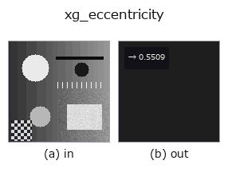

xldgeom op• Datenarten: contour → feature
• Aufruf: fullseye.apply(img, "xg_eccentricity", a=0.5, b=0.5) (das 2-D-Modell ist ein Bild plus zwei skalare Regler a,b∈[0,1])
• HALCON-Äquivalent: eccentricity_points_xld (Bedeutung und Parameter sind in der HALCON-Referenz nachzulesen)

*Die Abbildung ist die tatsächliche Ausgabe auf einer synthetischen 128×128-Eingabe. Links Eingabe, rechts Ausgabe. Punktwolken als Draufsicht-Streudiagramm (Helligkeit = z), 1-D-Reihen als Linie, Volumen als Maximum-Projektion entlang z, Videos als mittleres Bild, komplexe Bilder als Betrag; Rückgabewerte, die kein Bild ergeben, werden als Werte gezeigt.*
*Regler a ändert die Ausgabe nicht (gemessen: identisch bei 0,1 / 0,5 / 0,9).*
*Regler b ändert die Ausgabe nicht (gemessen: identisch bei 0,1 / 0,5 / 0,9).*
Stufen (die vorangehenden Ops → dieser Op, von links nach rechts):
▸ xg_eccentricity: Stufen (Doku-Website)
Exzentrizität sqrt(1 - λ_min/λ_max) aus der Punktkovarianz.
Fasst die Punkte aller Konturen des Kontur-Dicts {"shape", "cs"} zu 1 Punktmenge zusammen und gibt aus den Eigenwerten λ_min <= λ_max der Populations-Kovarianzmatrix ihrer (row, col)-Koordinaten die Exzentrizität e = sqrt(1 - λ_min/λ_max) zurück. Der doppelte Endpunkt einer geschlossenen Kontur (gleich dem Anfangspunkt) wird nicht gezählt. a, b werden nicht verwendet.
Rückgabewert ist ein numpy.float64 in [0, 1]. 0 für isotrope Punktanordnungen wie einen exakten Kreis oder ein Quadrat, 1 für Punkte auf einer Geraden (λ_min = 0). Bei weniger als 2 Punkten oder λ_max <= 1e-12 (alle Punkte identisch) 0.0. Bei mehreren Konturen ist es die Exzentrizität ihrer gemeinsamen Verteilung, in die nicht nur die Form der einzelnen Konturen, sondern auch die Ausdehnung ihrer Anordnung eingeht (für eine Bewertung je Kontur zuerst mit select_contours_xld o. Ä. auf 1 Kontur eingrenzen). Anders als flächenbasierte Maße hängt es von der Dichte der Konturpunkte ab (dicht besetzte Teile wirken stärker). Das Achsenverhältnis selbst liefert xg_elliptic_axis, die Richtung der Hauptachse xg_orientation.
• Leitfaden zur Familie gallery2d_geometry
• Katalog der Beispieldaten (Download-URLs / Lizenzen) — 2-D nutzt skimage.data (BSD/Public Domain) plus synthetische Bilder, 3-D nennt Download-URLs echter Datenquellen (Stanford, PDS, …).
• Herkunft und Literatur der Operatoren — die Quellen der Forschung/Verfahren, auf denen diese Operatorfamilie beruht.
• Der kanonische Algorithmus (Autor, Jahr) und seine Anwendungen stehen im Familienleitfaden oben.
Das Programm unten ist nachweislich lauffähig (gleiche Eingabe wie die Abbildung). In der Studio-Hilfe wird dieser Block zu Schaltflächen, die es sofort laden und ausführen.
threshold 0.50 0.50 sk_find_contours 0.50 0.50 xg_eccentricity 0.50 0.50
▸ Diese Pipeline laden · Laden & ausführen
• gallery2d_geometry — py -3.11 examples/gallery2d_geometry.py
feature als Eingabe)xldgeom)xg_moments · xg_area_center · xg_orientation · xg_elliptic_axis · xg_height_width_ratio · xg_regress_contours · xg_clip_contours · xg_gen_polygons
*Provenance: ops.py — 2D Operator-Registry. Diese Notiz wird von tools/opdocs.py md erzeugt (nicht von Hand bearbeiten).*
© 2026 Kazufumi Furuse — Fullseye operator documentation. Licensed under Apache-2.0.